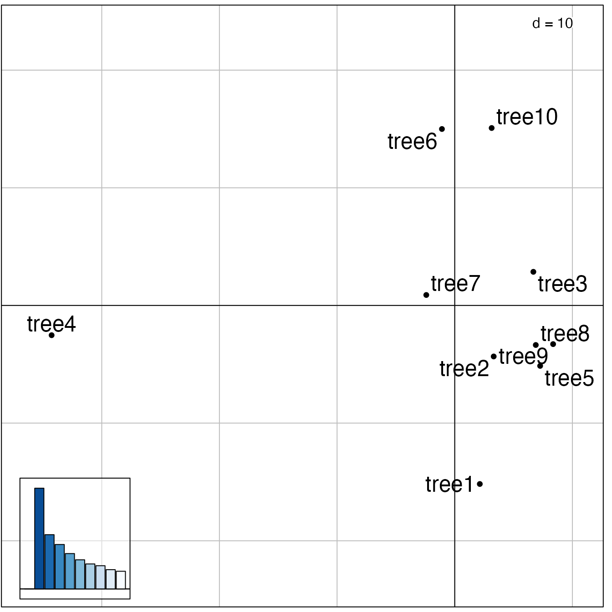
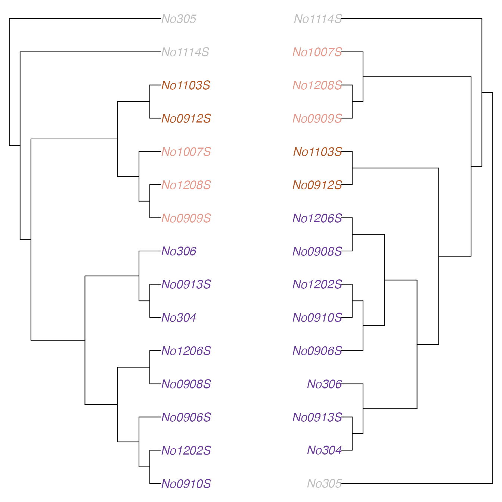

Exploration of landscapes of phylogenetic trees
Thibaut Jombart, Michelle Kendall
2023-04-03
Source:vignettes/introduction.Rmd
introduction.Rmdtreespace implements new methods for the exploration and analysis of distributions of phylogenetic trees for a given set of taxa.
Installing treespace
To install the development version from github:
library(devtools)
install_github("thibautjombart/treespace")The stable version can be installed from CRAN using:
install.packages("treespace")Then, to load the package, use:
## Loading required package: ape## Loading required package: ade4## Registered S3 methods overwritten by 'adegraphics':
## method from
## biplot.dudi ade4
## kplot.foucart ade4
## kplot.mcoa ade4
## kplot.mfa ade4
## kplot.pta ade4
## kplot.sepan ade4
## kplot.statis ade4
## scatter.coa ade4
## scatter.dudi ade4
## scatter.nipals ade4
## scatter.pco ade4
## score.acm ade4
## score.mix ade4
## score.pca ade4
## screeplot.dudi ade4Content overview
The main functions implemented in treespace are:
treespace: explore landscapes of phylogenetic treestreespaceServer: open up an application in a web browser for an interactive exploration of the diversity in a set of treesfindGroves: identify clusters of similar treesplotGroves: scatterplot of groups of trees, andplotGrovesD3which enables interactive plotting based on d3.jsmedTree: find geometric median tree(s) to summarise a group of trees
Other functions are central to the computations of distances between trees:
treeVec: characterise a tree by a vectortreeDist: find the distance between two tree vectorsmultiDist: find the pairwise distances of a list of treesrefTreeDist: find the distances of a list of trees from a reference treetipDiff: for a pair of trees, list the tips with differing ancestryplotTreeDiff: plot a pair of trees, highlighting the tips with differing ancestry
Distributed datasets include:
woodmiceTrees: illustrative set of 201 trees built using the neighbour-joining and bootstrapping example from the woodmice dataset in the ape documentation.DengueTrees: 500 trees sampled from a BEAST posterior set of trees from (Drummond and Rambaut, 2007)DengueSeqs: 17 dengue virus serotype 4 sequences from (Lanciotti et al., 1997), from which theDengueTreeswere inferred.DengueBEASTMCC: the maximum clade credibility (MCC) tree from theDengueTrees.
Exploring trees with treespace
We first load treespace, and the packages required for graphics:
The function treespace defines typologies of
phylogenetic trees using a two-step approach:
perform pairwise comparisons of trees using various (Euclidean) metrics; by default, the comparison uses the Kendall and Colijn metric (Kendall and Colijn, 2016) which is described in more detail below; other metrics rely on tip distances implemented in adephylo (Jombart et al., 2010) and phangorn (Schliep 2011).
use Metric Multidimensional Scaling (MDS, aka Principal Coordinates Analysis, PCoA) to summarise pairwise distances between the trees as well as possible into a few dimensions; the output of the MDS is typically visualised using scatterplots of the first few Principal Components (PCs); this step relies on the PCoA implemented in ade4 (Dray and Dufour, 2007).
The function treespace performs both tasks, returning
both the matrix of pairwise tree comparisons ($D), and the
PCoA ($pco). This can be illustrated using randomly
generated trees:
# generate list of trees
suppressWarnings(RNGversion("3.5.0"))
set.seed(1)
x <- rmtree(10, 20)
names(x) <- paste("tree", 1:10, sep = "")
# use treespace
res <- treespace(x, nf=3)
names(res)## [1] "D" "pco"
res## $D
## tree1 tree2 tree3 tree4 tree5 tree6 tree7 tree8 tree9
## tree2 26.00
## tree3 31.06 26.74
## tree4 42.85 42.12 44.44
## tree5 30.66 27.71 27.37 44.79
## tree6 36.50 31.18 30.18 41.81 31.59
## tree7 34.64 28.71 29.48 40.35 31.11 32.37
## tree8 28.97 26.29 24.45 43.74 23.47 30.41 29.00
## tree9 29.63 27.42 27.48 45.61 26.31 30.89 29.77 24.60
## tree10 34.87 30.00 29.44 44.97 34.06 31.05 34.41 31.54 32.59
##
## $pco
## Duality diagramm
## class: pco dudi
## $call: dudi.pco(d = D, scannf = is.null(nf), nf = nf)
##
## $nf: 3 axis-components saved
## $rank: 9
## eigen values: 142.1 76.52 62.69 49.88 41.07 ...
## vector length mode content
## 1 $cw 9 numeric column weights
## 2 $lw 10 numeric row weights
## 3 $eig 9 numeric eigen values
##
## data.frame nrow ncol content
## 1 $tab 10 9 modified array
## 2 $li 10 3 row coordinates
## 3 $l1 10 3 row normed scores
## 4 $co 9 3 column coordinates
## 5 $c1 9 3 column normed scores
## other elements: NULLPairwise tree distances can be visualised using adegraphics:
# table.image
table.image(res$D, nclass=30)
# table.value with some customization
table.value(res$D, nclass=5, method="color",
symbol="circle", col=redpal(5))
The best representation of these distances in a 2-dimensional space
is given by the first 2 PCs of the MDS. These can be visualised using
any scatter plotting tool; here we use the treespace function
plotGroves, based on the adegraphics function
scatter:
plotGroves(res$pco, lab.show=TRUE, lab.cex=1.5)
Alternatively, plotGrovesD3 creates interactive plots
based on d3.js:
plotGrovesD3(res$pco, treeNames=1:10)Tree labels can be dragged into new positions to avoid problems such as overlapping.
The functionality of treespace can be further
illustrated using ape’s dataset woodmouse, from which
we built the 201 trees supplied in woodmiceTrees using the
neighbour-joining and bootstrapping example from the ape
documentation.
data(woodmiceTrees)
wm.res <- treespace(woodmiceTrees,nf=3)
# PCs are stored in:
head(wm.res$pco$li)## A1 A2 A3
## 1 -0.9949 -1.363 -0.7918
## 2 -0.6137 -1.014 -0.6798
## 3 2.6667 4.219 -2.9293
## 4 -13.6081 1.854 1.0947
## 5 2.1980 4.176 -3.1960
## 6 3.6013 4.865 2.9853
# plot results
plotGrovesD3(wm.res$pco)Packages such as adegraphics and ggplot2 can be used to make alternative plots, for example visualising the density of points within the space.
The treespace function multiDist simply
performs the pairwise comparison of trees and outputs a distance matrix.
This function may be preferable for large datasets, and when principal
co-ordinate analysis is not required. It includes an option to save
memory at the expense of computation time.
Identifying clusters of trees
Once a typology of trees has been derived using the approach described above, one may want to formally identify clusters of similar trees. One simple approach is:
select a few first PCs of the MDS (retaining signal but getting rid of random noise)
derive pairwise Euclidean distances between trees based on these PCs
use hierarchical clustering to obtain a dendrogram of these trees
cut the dendrogram to obtain clusters
In treespace, the function findGroves
implements this approach, offering various clustering options (see
?findGroves). Here we supply the function with our
treespace output wm.res since we have already
calculated it, but it is also possible to skip the steps above and
directly supply findGroves with a multiPhylo list of
trees.
wm.groves <- findGroves(wm.res, nclust=6)
names(wm.groves)## [1] "groups" "treespace"Note that when the number of clusters (nclust) is not
provided, the function will display a dendrogram and ask for a cut-off
height.
The results can be plotted directly using plotGrovesD3
(see ?plotGrovesD3 for options):
# basic plot
plotGrovesD3(wm.groves)
# alternative with improved legend and tooltip text, giving the tree numbers:
plotGrovesD3(wm.groves, tooltip_text=paste0("Tree ",1:201), legend_width=50, col_lab="Cluster")
# plot axes 2 and 3. This helps to show why, for example, clusters 2 and 4 have been identified as separate, despite them appearing to overlap when viewing axes 1 and 2.
plotGrovesD3(wm.groves, xax=2, yax=3, tooltip_text=paste0("Tree ",1:201), legend_width=50, col_lab="Cluster")We can also plot in 3D:
treespaceServer: a web application for
treespace
The functionalities of treespace are also available via
a user-friendly web interface, running locally on the default web
browser. It can be started by simply typing
treespaceServer(). The interface allows you to import trees
and run treespace to view and explore the tree space in 2
or 3 dimensions. It is then straightforward to analyse the tree space by
varying \(\lambda\), looking for
clusters using findGroves and saving results in various
formats. Individual trees can be easily viewed, including median trees
per cluster (see below). Pairs of trees can be viewed together with
their tip-differences highlighted using the function
plotTreeDiff, and collections of trees can be seen together
using densiTree from the package phangorn. It is
fully documented in the help tab.
Finding median trees
When a set of trees have very similar structures, it makes sense to
summarize them into a single ‘consensus’ tree. In
treespace, this is achieved by finding the median
tree for a set of trees according to the Kendall and Colijn metric.
That is, we find the tree which is closest to the centre of the set of
trees in the tree landscape defined in treespace. This
procedure is implemented by the function medTree:
# get first median tree
tre <- medTree(woodmiceTrees)$trees[[1]]
# plot tree
plot(tre,type="cladogram",edge.width=3, cex=0.8)
However, a more complete and accurate summary of the data can be
given by finding a summary tree from each cluster. This is achieved
using the groups argument of medTree:
# find median trees for the 6 clusters identified earlier:
res <- medTree(woodmiceTrees, wm.groves$groups)
# there is one output per cluster
names(res)## [1] "1" "2" "3" "4" "5" "6"
# get the first median of each
med.trees <- lapply(res, function(e) ladderize(e$trees[[1]]))
# plot trees
par(mfrow=c(2,3))
for(i in 1:length(med.trees)) plot(med.trees[[i]], main=paste("cluster",i),cex=1.5)
These trees exhibit a number of topological differences, e.g. in the
placement of the (1007S,1208S,0909S) clade. To examine
the differences between the trees in a pairwise manner, we can use the
function plotTreeDiff, for example:
# Compare median trees from clusters 1 and 2:
plotTreeDiff(med.trees[[1]],med.trees[[2]], use.edge.length=FALSE,
treesFacing = TRUE, colourMethod = "palette", palette = funky)
# Compare median trees from clusters 1 and 4, and change aesthetics:
plotTreeDiff(med.trees[[1]],med.trees[[4]], type="cladogram", use.edge.length=FALSE,
treesFacing = TRUE, edge.width=2, colourMethod="palette", palette=spectral)
Performing this analysis enables the detection of distinct representative trees supported by data.
Note that in this example we supplied the function
medTree with the multiPhylo list of trees. A more
computationally efficient process (at the expense of using more memory)
is to use the option return.tree.vectors in the initial
treespace call, and then supply these vectors directly to
medTree. In this case, the tree indices are returned by
medTree but the trees are not (since they were not
supplied).
Emphasising the placement of certain tips or clades
In some analyses it may be informative to emphasise the placement of
particular tips or clades within a set of trees. This can be
particularly useful in large trees where the study is focused on a
smaller clade. Priority can be given to a list of tips using the
argument emphasise.tips, whose corresponding values in the
vector comparison will be given a weight of
emphasise.weight times the others (the default is 2,
i.e. twice the weight).
For example, if we wanted to emphasise where the woodmice trees agree and disagree on the placement of the (1007S,1208S,0909S) clade, we can simply emphasise that clade as follows:
wm3.res <- treespace(woodmiceTrees,nf=2,emphasise.tips=c("No1007S","No1208S","No0909S"),emphasise.weight=3)
# plot results
plotGrovesD3(wm3.res$pco)It can be seen from the scale of the plot and the density of clustering that the trees are now separated into more distinct clusters.
wm3.groves <- findGroves(woodmiceTrees,nf=3,nclust=6,emphasise.tips=c("No1007S","No1208S","No0909S"),emphasise.weight=3)
plotGrovesD3(wm3.groves)Conversely, where the structure of a particular clade is not of interest (for example, lineages within an outgroup which was only included for rooting purposes), those tips can be given a weight less than 1 so as to give them less emphasis in the comparison. We note that although it is possible to give tips a weighting of 0, we advise caution with this as the underlying function will no longer be guaranteed to be a metric. That is, a distance of 0 between two trees will no longer necessarily imply that the trees are identical. In most cases it would be wiser to assign a very small weighting to tips which are not of interest.
Method: characterising a tree by a vector
Kendall and Colijn proposed a metric for comparing rooted phylogenetic trees (Kendall and Colijn, 2016). Each tree is characterised by a vector which notes the placement of the most recent common ancestor (MRCA) of each pair of tips, as demonstrated in this example:

Specifically, it records the distance between the MRCA of a pair of tips \((i,j)\) and the root in two ways: the number of edges \(m_{i,j}\), and the path length \(M_{i,j}\). It also records the length \(p_i\) of each ‘pendant’ edge between a tip \(i\) and its immediate ancestor. This procedure results in two vectors for a tree \(T\):
\[ m(T) = (m_{1,2}, m_{1,3},...,m_{k-1,k},1,...,1) \]
and
\[ M(T) = (M_{1,2}, M_{1,3},...,M_{k-1,k},p_1,...,p_k). \]
In \(m(T)\) we record the pendant lengths as 1, as each tip is 1 step from its immediate ancestor. We combine \(m\) and \(M\) with a parameter \(\lambda\) between zero and one to weight the contribution of branch lengths, characterising each tree with a vector
\[ v_\lambda(T) = (1-\lambda)m(T) + \lambda M(T). \]
This is implemented as the function
treeVec. For example,
# generate a random tree:
tree <- rtree(6)
# topological vector of mrca distances from root:
treeVec(tree)## [1] 2 2 0 1 3 3 0 1 2 0 1 2 0 0 1 1 1 1 1 1 1
# vector of mrca distances from root when lambda=0.5:
treeVec(tree,0.5)## [1] 1.2173 1.2173 0.0000 0.6927 2.2131 1.8866 0.0000 0.6927 1.2173 0.0000
## [11] 0.6927 1.2173 0.0000 0.0000 0.6927 0.5232 0.7638 0.6800 0.8382 0.6090
## [21] 0.5360
# vector of mrca distances as a function of lambda:
vecAsFunction <- treeVec(tree,return.lambda.function=TRUE)
# evaluate the vector at lambda=0.5:
vecAsFunction(0.5)## [1] 1.2173 1.2173 0.0000 0.6927 2.2131 1.8866 0.0000 0.6927 1.2173 0.0000
## [11] 0.6927 1.2173 0.0000 0.0000 0.6927 0.5232 0.7638 0.6800 0.8382 0.6090
## [21] 0.5360The metric – the distance between two trees – is the Euclidean distance between these vectors:
\[ d_\lambda(T_a, T_b) = || v_\lambda(T_a) - v_\lambda(T_b) ||. \]
This can be found using treeDist:
# generate random trees
tree_a <- rtree(6)
tree_b <- rtree(6)
# topological (lambda=0) distance:
treeDist(tree_a,tree_b) ## [1] 4.123
# branch-length focused (lambda=1) distance:
treeDist(tree_a,tree_b,1)## [1] 2.873References
Dray, S. and Dufour, A. B. (2007) The ade4 package: implementing the duality diagram for ecologists. Journal of Statistical Software 22(4): 1-20.
Drummond, A. J. and Rambaut, A. (2007) BEAST: Bayesian evolutionary analysis by sampling trees. BMC Evolutionary Biology, 7(1), 214.
Jombart, T., Balloux, F. and Dray, S. (2010) adephylo: new tools for investigating the phylogenetic signal in biological traits. Bioinformatics 26: 1907-1909. DOI: 10.1093/bioinformatics/btq292
Kendall, M. and Colijn, C. (2016) Mapping phylogenetic trees to reveal distinct patterns of evolution. Molecular Biology and Evolution, first published online: June 24, 2016. DOI: 10.1093/molbev/msw124
Lanciotti, R. S., Gubler, D. J. and Trent, D. W. (1997) Molecular evolution and phylogeny of dengue-4 viruses. Journal of General Virology, 78(9), 2279-2286.
Schliep, K. P. (2011) phangorn: phylogenetic analysis in R. Bioinformatics 27(4): 592-593.